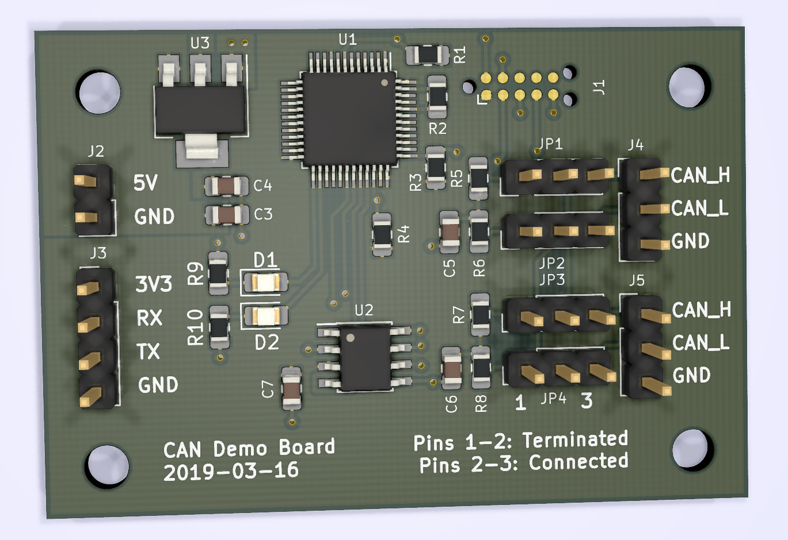
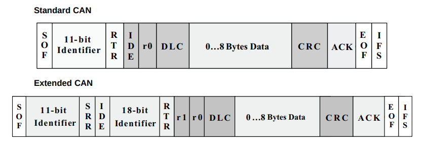
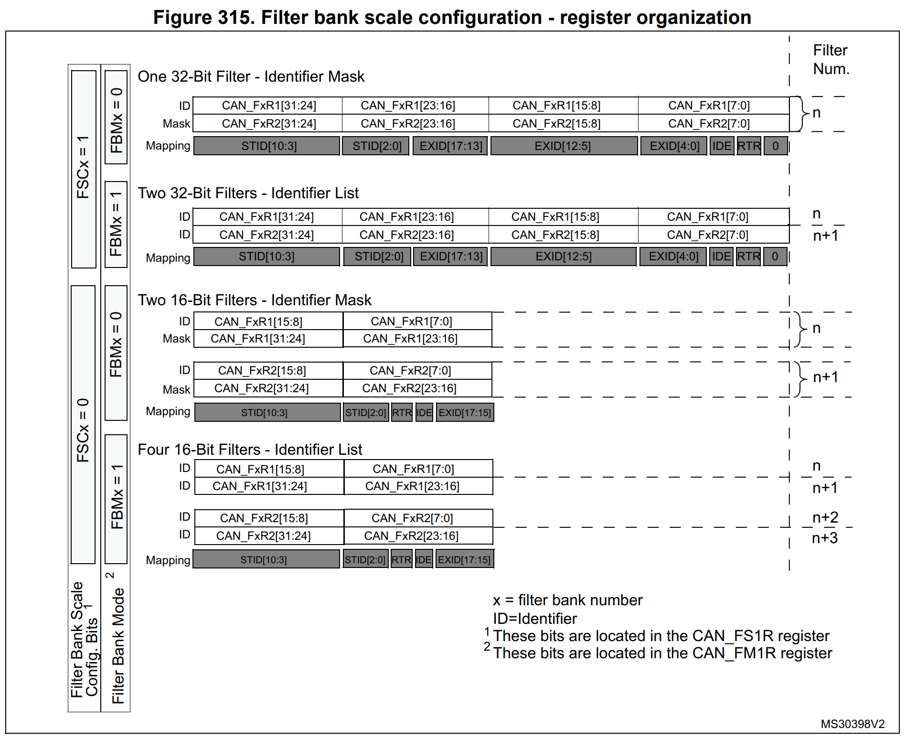
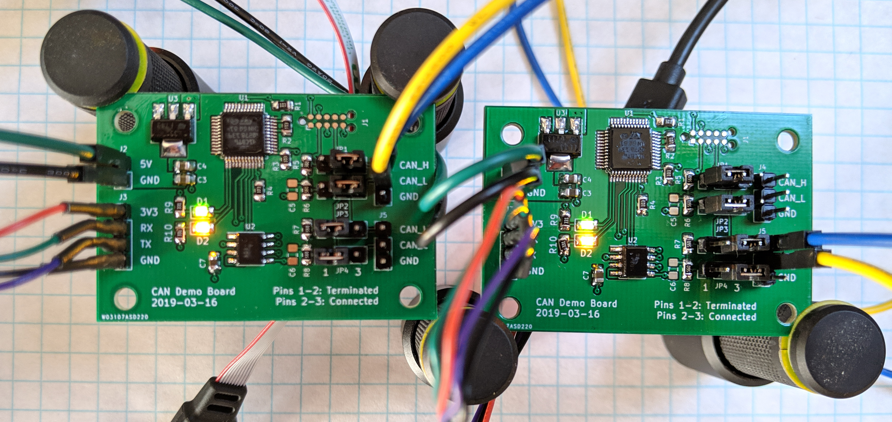
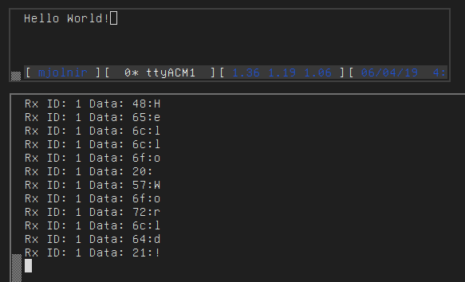
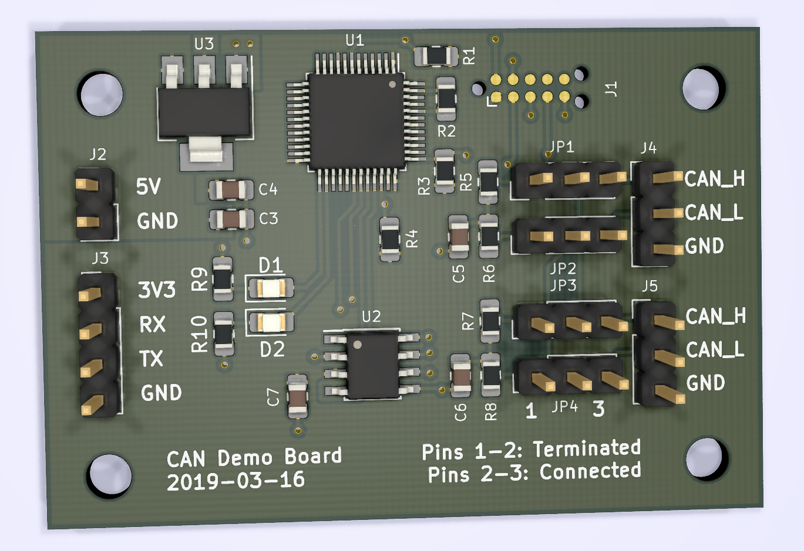
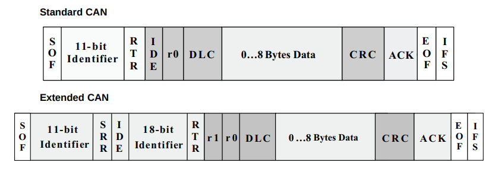
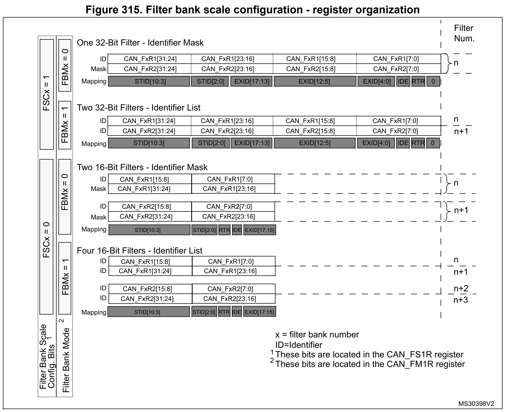
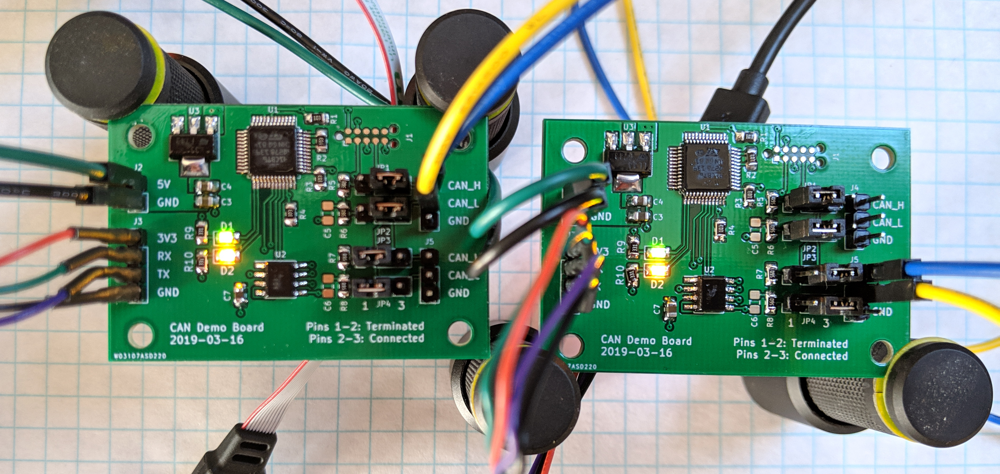
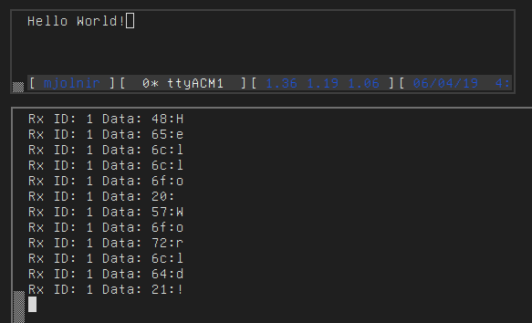

programming blog
by Ross Schlaikjer
© 2023. All rights reserved.
This is the fourth post in a series on the STM32 series of MCUs and libopencm3. The previous post, on SPI and DMA, can be found here.
The CAN bus is a multi-master, low data rate bus for communicating between controllers in environments with potentially high EMI. Initially designed for automotive applications, it is becoming increasingly used in general automation environments as well as by hobbyists. Electrically, CAN uses a differential pair of signals, CANH and CANL, to send data on the bus. In order to transmit a logic ‘1’ (also known as ‘recessive’ in CAN parlance), the differential voltage of the lines is left at 0. To transmit a logic ‘0’ (dominant), the voltage between the lines is driven high. This means that any node transmitting a 0 will override the transmission of a node that is simultaneously trying to transmit a 1. It is this mechanism that allows for the priority system in a CAN network - since each CAN message begins with the message ID, starting from the MSB, any controller asserting a logic ‘0’ on the bus will clobber a controller attempting to transmit a logic ‘1’. Since all transmitters read the bus as they transmit, this clobbering can be detected by the controller with the lower priority transmission, which will back off until the bus is clear again. This protocol is therefore categorized as ‘CSMA/CD+AMP’, or Carrier Sense Multiple Access / Collision Detection + Arbitration on Message Priority.
When transferring data between two microcontroller systems, people are probably already familiar with I2C and SPI, which are commonly used for low (I2C, 100-400kHz) or high (SPI, 100MHz+) speed data transfer between ICs. However, both of these protocols are really intended for operation over a short distance, ideally on the same board. Running I2C or SPI off-board, even for relatively short distances, can start to result in bit errors at higher speeds or in the presence of interference. The electrical integrity problems with I2C and SPI can be alleviated by using differential signals, as is the case with RS422/485. This allows RS485 to transmit data at high (multiple megabit) speeds over distances of 300-900 feet. This might satisfy our reliability or distance requirements, but none of these protocols bake in support for multi-master communication - SPI is very strongly based around a single-master design, and while I2C does allow for multiple devices to control the bus, there is no built-in arbitration support. Similarly for RS485, the application developer must roll their own packet structure and arbitration to handle bus contention.
CANBus performs quite well on some of these points, being:
However, CANbus does have some drawbacks that make it a poor fit for other applications. These include:
When deciding whether or not to use CAN, be sure to think carefully about the requirements of your application and whether or not CAN is the best fit.
For ‘High speed’ CAN (~512 Kbps), all controllers (nodes) in the system must be connected to a linear bus, with appropriate termination. This is to mitigate signal reflections, which can cause bit errors at receiving nodes. This does however mean that CAN buses can be slightly more work to add or remove nodes from, compared to systems that allow a ‘star’ topology (e.g. an ethernet switch). Instead each node must be connected directly to a previous node and to a subsequent node, or, in the case of the last node on either end, a terminating resistor of 120 ohms.
If one is willing to sacrifice some speed, ‘fault tolerant’ CAN (~128 Kbps) can be operated in a star topology, with the termination divided up and placed at each node. For more information, the Wikipedia page on CAN has some diagrams.
As an example implementation, I have created a small demo board in KiCad with switchable termination to be used for high-speed CAN communication. The design files are available here if you are interested in producing some yourself, or you can directly order them from PCBway here.
CAN frames follow a defined format: all standard frames have an 11-bit identifier and up to 8 bytes of data. Extended frames allow 29 bit identifiers, but only the same 8 bytes of data. CAN frames also include checksums, and most CAN implementations in microcontrollers will automatically insert / verify checksums in hardware. The appearance on the wire of CAN frames is as follows:
As may be clear from the 8 byte max payload size, CAN is not a good choice for applications that need to transfer large quantities of data. Instead it is much more suited for controls and small sensor data.
N.B: The ‘RTR’ bit in a CAN message is mutually exclusive with the data segment.
If you set the RTR bit, you may still specify a data length code (DLC) but the peripheral will not transmit any data bytes. Be careful when receiving frames that you ignore any data bytes ‘received’ in RTR frames, as they will simply be junk memory, which can led to pernicious bugs.
Now that we have an understanding of the CAN bus architecture, let’s actually build a small application that will send and receive data on the bus. Setting up the basics is relatively straightforward with a call to can_init():
In order to receive messages, in our CAN ISR we need to check to see which FIFO has pending data, and can then read off the message. For this demo, we’ll just put all of the messages in the same queue to be processed later.
So far, our application will receive and try to store all messages that appear on the bus. But for many applications, we may be able to ignore a lot of messages, and save ourselves some CPU time. To this end, the CAN peripheral on the STM32F091 has a series of filter banks that can be used to selectively accept different message types. The general structure of the filters is that you have an ID register used to input the data you want to match against, and then a mask register that defines which bits of ID register are to be matched. This can be a bit complex at first glance - let’s take a look at the relevant figure in the ST reference manual:
As an example, let’s say that we have a device that only wants to receive two types of message:
Since these are both standard frames, we can use 16 bit filters, to save space. From figure 315 we can see that the first 11 bits of the register match against the ID, and bit 4 in the lower byte matches the RTR flag in the CAN message. So for our first filter, we want to assert that the message ID is <= 255. Since 255 is 0xFF, or 8 bits set, we know that any ID numbers above 255 will have one of bits 9-11 set. So to match only lower IDs, we can assert that the top three bits of the ID are zero. So for our first filter, we can create it like so:
For our second filter, we want to match the ID exactly, so we will load our ID register with our actual desired message value (342) and in our mask we will select all bits of the STDID field. Since we want to assert that the RTR field is also set, we will likewise place a 1 both the ID and MASK registers at bit 5, like so:
Once we have our filters, we can configure the CAN peripheral with them like so. All messages that match either of these filters will be placed into FIFO 0.
Now that we have our CAN peripheral initialized, let’s write a simple demo application. We’ll use the demo board mentioned above (which you can order directly from PCBWay here) to create a simple program that forwards bytes from the UART over the CAN bus. In our main application loop, we’ll first take any characters that have been received over the UART and transmit them over CAN. (Implementation details of the Frame class can be seen here for those curious.)
We also need to receive frames off the bus and display the data. The receive interrupt we wrote earlier will queue the frames, so we can pop them off in order and print out the details.
The full firmware listing can be found here.
In order to test this, we can assemble two test boards and flash the same firmware to each. We can then connect the CANH and CANL pins of each board using jumpers, and configure the termination using jumpers. Since each board is connected to only one other board, we will set the jumper position for the connected header to pins 2-3, which connects the jumper pins directly to the transceiver. For the other set of jumpers, we select pins 1-2 to connect the terminating resistors (in this case a split termination of two 59 Ohm resistors and a 4.7nF capacitor) to the bus.
Once the boards are connected, we can connect a USB to UART adapter to each one and try sending some data back and forth. If everything is working properly, typing into the console of one board will cause it to send characters over CAN to the other, and vice versa.
This concludes our overview of CANBus, and the implementation details of the CAN peripheral on the STM32 series of microcontrollers. Using the basics in this post you should be able to create far more interesting applications.
As per usual, the code for this post is available on Github.
 








